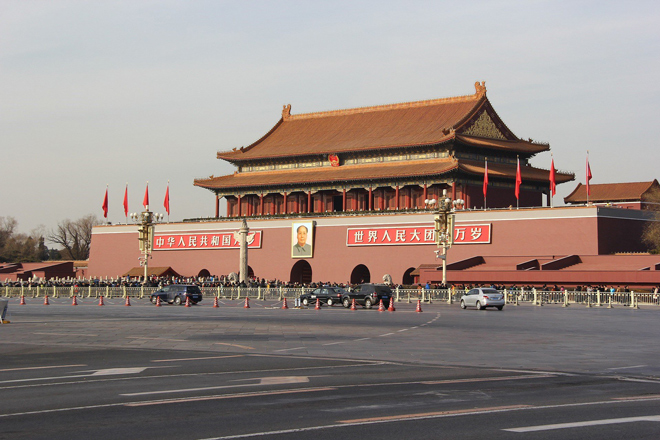
.
Tiananmen Square is the major square in the centre of Beijing named after the Tian'anmen ('Gate of Heavenly Peace') located to its north, separating it from the Forbidden City. The square contains the Monument to the People's Heroes, the Great Hall of the People, the National Museum of China and the Mausoleum of Mao Tse-tung (Mao Zedong).
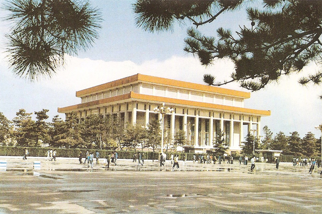
Mao proclaimed the founding of the People's Republic of China in the square on 1 October 1949; the anniversary of this event is observed there every year.
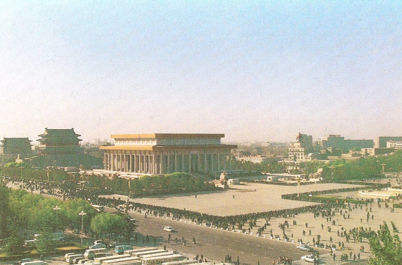
This is possibly the best-known image from Tiananmen Square: the man standing in front of the tanks which were sent in to quell the protestors. No one knows to this day how many people were killed on the night of 3 June 1989. The government figure is 241, including soldiers, and 7,000 wounded. Since then, unofficial estimates put the death toll at about 3,000, but in a relatively recently declassified secret diplomatic cable from the then UK Ambassador to Beijing, Sir Alan Donald, he revealed that the morning after the tanks had rolled in to the square and opened fire, it could have been as high as 10,000.
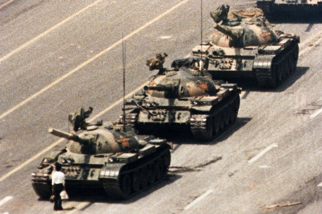
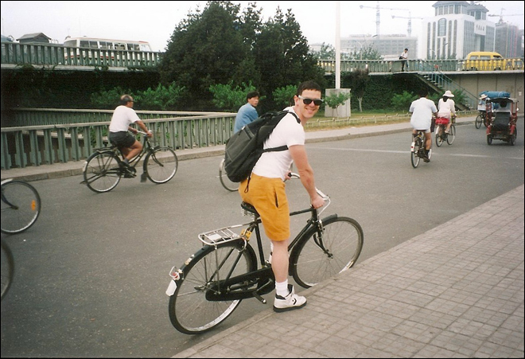
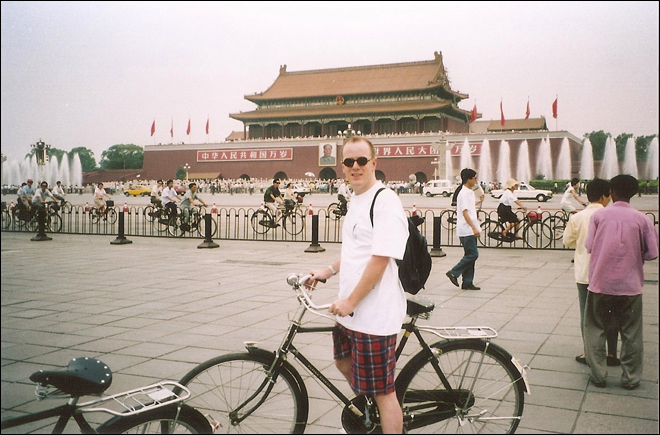
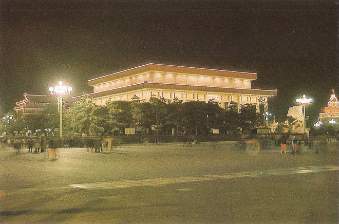
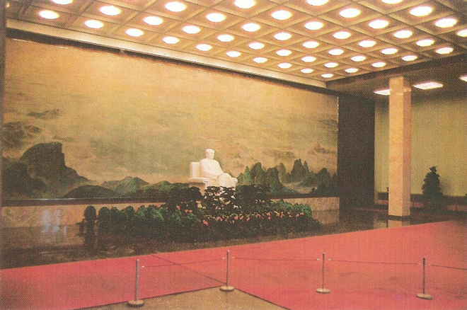
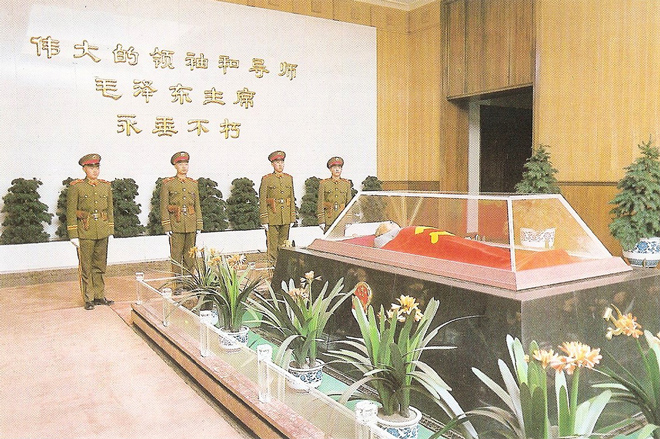
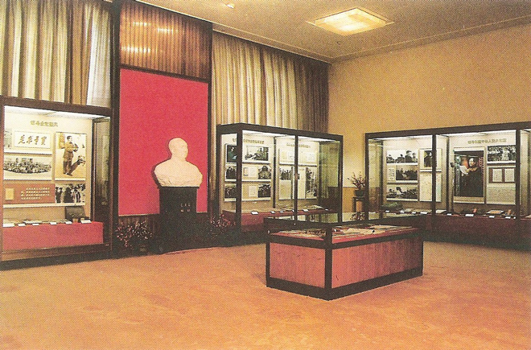
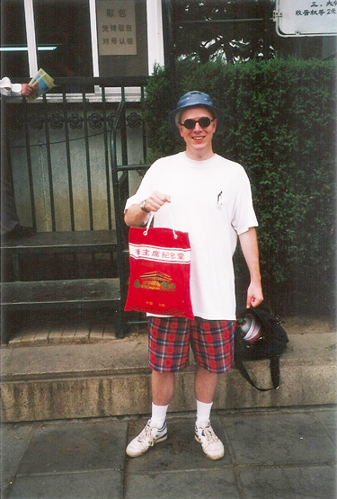
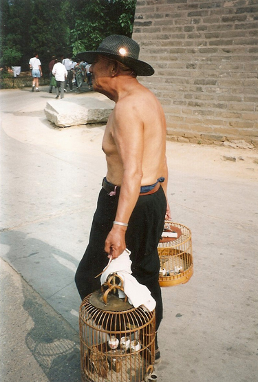
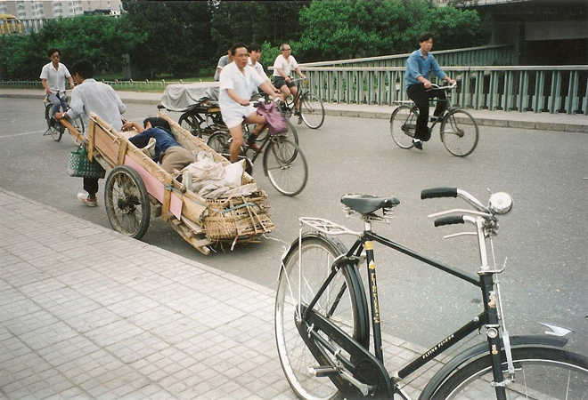
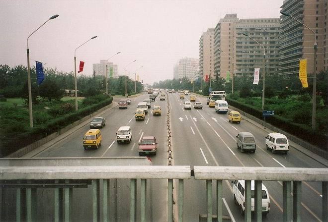
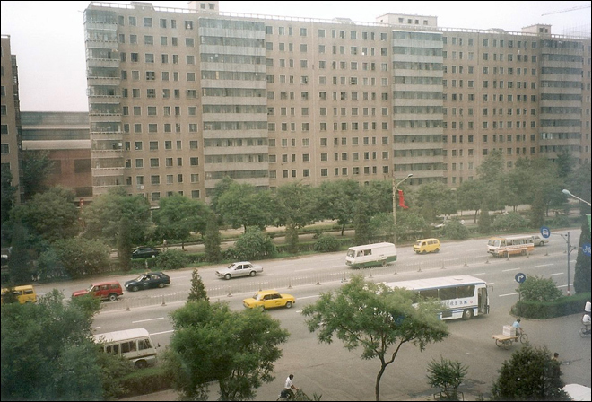
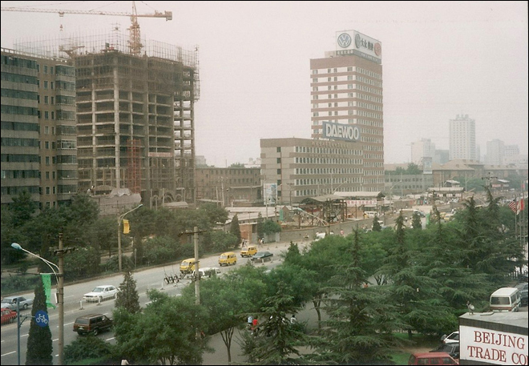